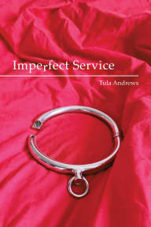
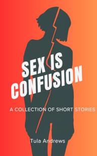

Author of psychological fiction & biographical works
Exploring the intricate landscapes of power exchange, BDSM dynamics, and the unvarnished truth behind ritual.
I am a writer of both biographical and fictional material, with a primary focus on the intricate psychological landscapes of power exchange. My writing explores the depths of BDSM and Consensual Non-Consent (CNC)-based dynamics, seeking the "unvarnished truth" behind the ritual.
As an autistic author, my neurodivergence shapes my writing, bringing a particular sensitivity to detail, ritual, and internal experience. My debut book is a reflective biography, detailing thirty-five years spent within Total Authority Transfer (TAT) dynamics, including an honest look at the mistakes I've made along the way.
I am currently working on a number of projects including a short story collection and a fantasy series set in a primitive world inspired by Greco-Roman societies. I live in the UK and write daily.
Available on Kindle Unlimited

A reflective biography detailing thirty-five years within Total Authority Transfer (TAT) dynamics.
Read on Kindle
A collection of short stories exploring power dynamics and psychological landscapes.
Read on KindleA fantasy series set in a primitive world inspired by Greco-Roman societies.
Read on KindleRead excerpts from my work
From Imperfect Service
The first steps into a world of power exchange and self-discovery...
From Mariselle's Choice
In a world where a woman’s status is everything,
Mariselle is willing to throw it all away
Currently, I am working on a book which discusses our struggles to incorporate a Gorean flavour to our dynamic. This has always been something that I’ve craved ever since I knew the books existed. Writing the book has forced me to realise that there were two occasions when we genuinely got close to what I craved, yet in both instances I panicked and (unintentionally?) sabotaged what we had. I’ve been thinking about the why for the last few days. Both were for slightly different reasons, I believe, so I’ll look at them separately first.
In the first instance, Master had decided to implement an escalating discipline policy. I’d be warned the first time I committed an offence and from there things would get more severe. One day, I reached the point where I committed four misdemeanours which He had already corrected me for twice that week. I knew that this meant a more severe punishment was due, but I never thought it would feel the way it did.
He came home and without any warmup or preparation time ordered me to strip and then tied me over the bench. He told me that for each of the four offences I would receive five strikes of the heavy cane and that I would receive an extra five on top of that because of the number of mistakes.
Read More